23 Least Squares Regression in Linear Models
A Problem With Subsample Averages
Sometimes There Isn’t Much to Average
$$ \newcommand{X}{} \newcommand{Y}{}
$$
- Very few people in our California CPS sample have less than 11 years of education.
- There’s a good reason for this: CA law requires residents stay in school until they’re 18.
- But that means our 8th-10th grade income averages are based on very few people.
- And that makes them very sensitive to who, exactly, is in the sample.
Sensitivity
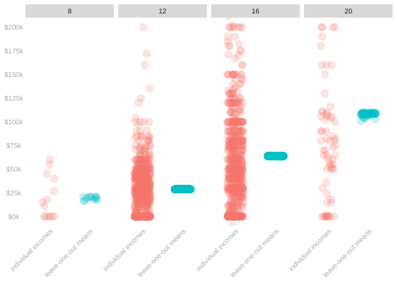
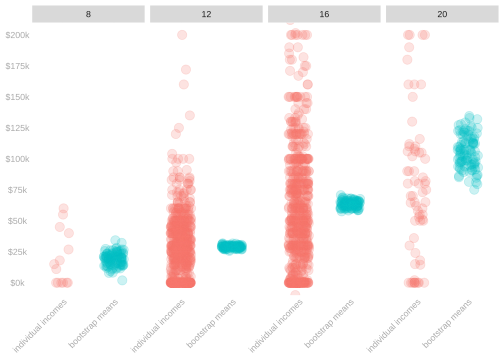
- If we leave even one person out of our 8th grade average, it changes a fair amount.
- Each person’s income is 1/14th of that average.
- We can see those changes in the ‘leave-one-out means’ plot on the left.
- That’s not a problem with the 12th grade average.
- Each person’s income is 1/605th of that average.
- And the leave-one-out means barely change.
- We see a more ‘statistical’ version of this by looking at the bootstrap means plot on the right.
- The spread of these bootstrap means is a good approximation to the spread
we get in the actual sample means when we sample from the population. - And it’s huge for folks with 8th grade educations.
- The spread of these bootstrap means is a good approximation to the spread
Sometimes There’s Nothing to Average
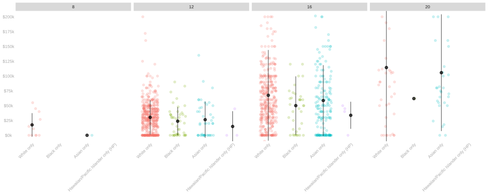
- When we break things out in additional dimensions, e.g. by race, we see a bigger problem.
- We can’t even take an average of Black survey respondents with 8th grade educations.
- There’s nobody in that column to average.
Often.
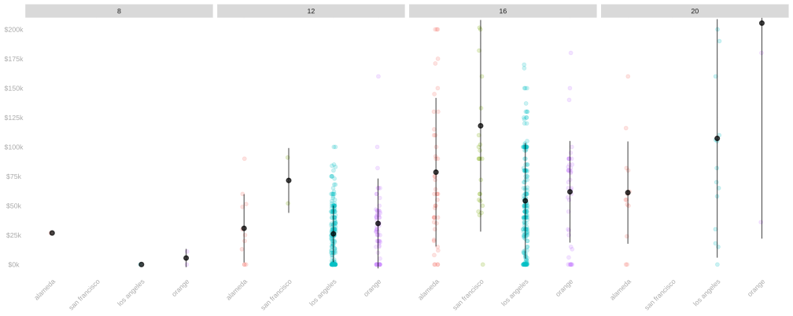
- When we break things out by county, we have empty columns too.
- We’ve sampled nobody in San Francisco with an 8th grade education.
- This isn’t an edge case. This is common.
Extremely Common.
- When we break things down in multiple dimensions, we have a lot of empty categories.
- Even using 3 dimensions—race, county, and education—we have a lot of empties.
- Those aren’t necessarily empty categories in the population: we’ve only sampled 1/2500 people.
- But if we need to sample people in those groups to make predictions about them, we’re stuck.
- We don’t have anything we can say about these unsampled groups.
- So we can’t estimate any population summaries involving them.
- So we need some way to make predictions for groups with no data.
A Partial Solution

- We’ve already seen a partial solution to this problem: coarsening.
- Here we’ve coarsened in two dimensions.
- We’ve coarsened education into two categories: 4-year degree (≥ 16 years) vs. no 4-year degree (< 16 years).
- We’ve coarsened county into two areas: SF Bay Area (SF, Alameda) and LA Area (LA, Orange).
- And it helps, but we have two problems.
- We’ve renamed everything, so we’d have to redefine all our summaries. This is fixable.
- We still have empty groups, although we have fewer. This is not.
We Need A General Solution
- This empty groups problem is a much bigger deal with this data
- We’ve been looking at some of the most populous counties and common racial identities.
- If we use all the counties in CA and all the identities the CPS includes, most groups are empty.
- And the range of coarsening options is overwhelming.
Today’s Plan
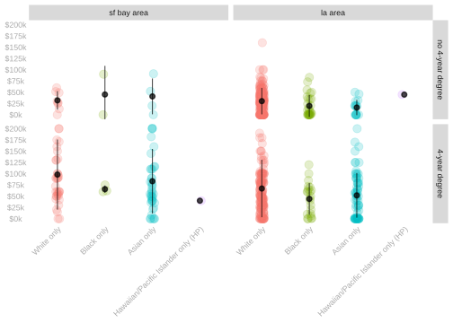
- Today, we’re going to talk about how to deal with the problem of small or empty groups.
- To make this more manageable, we’ll break things down into a two-step process.
- We’ll decide on a regression model: a set of functions we could use to make predictions.
- We’ll choose the best function from our model using the least squares criterion.
- We call the function we choose this way the least squares predictor within our model.
Notation
- So far, we’ve used \(\mu(x)\) to refer to mean of a column in the population plot.
\[ \mu(x) = \frac{1}{m_x}\sum_{j:x_j=x} y_j \quad \text{ for } m_x = \sum_{j:x_j=x} 1 \]
- We’ve used \(\hat\mu(x)\) for one particular estimate of \(\mu(x)\): the mean of the corresponding column in the sample.
\[ \hat\mu(x) = \frac{1}{N_x}\sum_{i:X_i=x} Y_i \quad \text{ for } N_x = \sum_{i:X_i=x} 1 \]
- From today on, we’ll be a bit more flexible with the meaning of \(\hat\mu\).
- We’ll use \(\hat\mu(x)\) to refer to any estimator of the subpopulation mean \(\mu(x)\).
- Which should be clear from context.
A Least Squares Interpretation of Means
Reinterpreting the Sample Mean

- Let’s stop thinking about the sample mean procedurally, i.e., how we calculate it
- Let’s think of it as a choice, i.e., the best number for summarizing the data according to some criterion.
- Here are the outcomes \(Y_i\) for sampled Californians with 8 years of education and three potential summaries of the location of those outcomes:
- The sample mode (blue line)
- The sample median (orange line)
- The sample mean (red line)
- All of these are reasonable summaries. And the best choice according to some reasonable criterion.
- Criteria which, sensibly, look what’s left over when we compare our observations to our location summary.
\[ \hat\varepsilon_i = Y_i - \hat\mu \qquad \text{ are the \textbf{residuals}} \]
Residuals
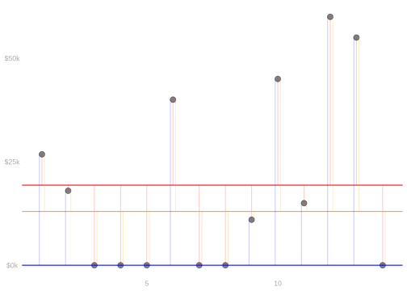
- Here we’re looking at the residuals for each of our location summaries \(\hat\mu\).
- \(\hat\varepsilon_i = Y_i - \hat\mu\) when \(\hat\mu\) is the mode (blue points). It has the largest number of zero residuals.
- \(\hat\varepsilon_i = Y_i - \hat\mu\) when \(\hat\mu\) is the sample median (orange points). It has the smallest sum of absolute residuals.
- \(\hat\varepsilon_i = Y_i - \hat\mu\) when \(\hat\mu\) is the sample mean (red points). It has the smallest sum of squared residuals.
- For better or for worse, the sum of squared residuals is the criterion we tend to use.
\[ \textcolor{red}{\hat \mu} = \mathop{\mathrm{argmin}}_{\text{numbers}\ m} \sum_{i=1}^n \qty{ Y_i - m }^2 \quad \text{ is the \textbf{least squares estimate}} \]
Terminology
- The argmin of a function is the argument at which the function is minimized. \[ \hat\mu = \mathop{\mathrm{argmin}}_{m} \ f(m) \quad \iff \quad f(\hat\mu) = \min_m \ f(m) \]
- Here that function is the sum of squared residuals, \(f(m) = \sum_{i=1}^n \qty{ Y_i - m }^2\).
The Least Squares Location Summary
\[ \hat \mu = \mathop{\mathrm{argmin}}_{\text{numbers}\ m} \sum_{i=1}^n \qty{ Y_i - m }^2 \quad \text{ satisfies the \textbf{zero-derivative condition} } \] \[ \begin{aligned} 0 &= \frac{d}{dm} \sum_{i=1}^n \qty{ Y_i - m }^2 \ \ \mid_{m=\hat\mu} \\ &= \class{fragment}{\sum_{i=1}^n \frac{d}{dm} \qty{ Y_i - m }^2 \ \ \mid_{m=\hat\mu}} \\ &= \class{fragment}{\sum_{i=1}^n -2 \qty{ Y_i - m } \ \ \mid_{m=\hat\mu}} \\ &= \class{fragment}{\sum_{i=1}^n -2 \qty{ Y_i - \hat\mu }} \end{aligned} \]
- This says the least squares residuals \(\hat\varepsilon = Y_i - \hat \mu\) sum to zero.
- With a bit of algebra, this tells us that the least squares estimator \(\hat\mu\) is the sample mean.
\[ \begin{aligned} &0 = \class{fragment}{\sum_{i=1}^n -2\qty{ Y_i - \hat\mu }} && \text{ when } \\ &\class{fragment}{2\sum_{i=1}^n Y_i = 2\sum_{i=1}^n \hat\mu = 2n\hat\mu} && \text{ and therefore when } \\ &\class{fragment}{\frac{1}{n}\sum_{i=1}^n Y_i = \hat\mu} \end{aligned} \]
- It’s not just the best choice of the 3 location summaries we’ve looked at.
- It’s the best choice — in terms of the sum of squared errors criterion — of all numbers outright.
Two Locations: Regression with a Binary Covariate
- Suppose we have two groups: people in our sample with 8 and 12 years of education.
- We can find the best location for each using this criterion of minimizing squared residuals.
- We can think of the column means \(\hat\mu(x)\) as the best function of x for predicting y.
- That is, the best function of years of education for predicting income.
- Where best means the one that minimizes the sum of squared residuals.
\[ \hat \mu(x) = \mathop{\mathrm{argmin}}_{\text{functions}\ m(x)} \sum_{i=1}^n \qty{ Y_i - m(X_i) }^2 \]
Two Locations: Regression with a Binary Covariate
- Why? Recall that a function of \(X\) is just a number for each value of \(X\).
- So to see that the sub-sample means are the solution, we can break our sum into pieces where \(X\) is the same.
\[ \hat \mu(x) = \mathop{\mathrm{argmin}}_{\text{functions}\ m(x)} \sum_{i:X_i=8} \{ Y_i - m(8) \}^2 + \sum_{i:X_i=12} \{ Y_i - m(12) \}^2 \]
- And observe that the first sum depends only on \(m(8)\) and the second only on \(m(12)\).
- So we get \(\hat\mu(8)\) by minimizing squared residuals in the \(X=8\) column.
- And we get \(\hat\mu(12)\) by minimizing squared residuals in the \(X=12\) column.
- The minimizers — which we can solve for exactly as before — are the means in each column.
\[ \begin{aligned} \hat \mu(8) &= \mathop{\mathrm{argmin}}_{\text{numbers}\ m} \sum_{i:X_i=8} \{ Y_i - m \}^2 = \frac{\sum_{i:X_i=8} Y_i}{\sum_{i:X_i=8} 1 } \\ \hat \mu(12) &= \mathop{\mathrm{argmin}}_{\text{numbers}\ m} \sum_{i:X_i=12} \{ Y_i - m \}^2 = \frac{\sum_{i:X_i=12} Y_i}{\sum_{i:X_i=12} 1 } \end{aligned} \]
Many Locations: Regression with a Multiple or Many-Valued Covariates
There’s nothing special about two locations. We can do this for as many locations as we like.
We break our sum into pieces where \(X\) is the same. \[ \hat \mu(x) = \mathop{\mathrm{argmin}}_{\text{functions}\ m(x)} \sum_x \sum_{i:X_i=x} \{ Y_i - m(x) \}^2 \]
And we get the best location at each \(x\), in terms of squared residuals, by minimizing each piece.
The solution is, as before, the mean of each subsample.
\[ \hat \mu(x) = \mathop{\mathrm{argmin}}_{\text{numbers}\ m} \sum_{i:X_i=x} \{ Y_i - m \}^2 = \frac{\sum_{i:X_i=x} Y_i}{\sum_{i:X_i=x} 1 } \]
Coarsening
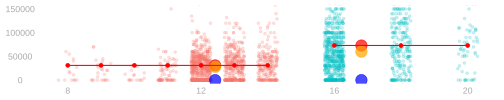
- When we coarsen, we’re in effect restricting the set of functions we’re considering.
- We’re restricting them to be functions of the coarsened groups \(c(x)\), i.e. the color in the plot.
- Now we break our sum into pieces where the coarsened group \(c(x)\) is the same.
\[ \begin{aligned} \hat \mu(c(x)) &= \mathop{\mathrm{argmin}}_{\text{functions}\ m(c(x)) } \sum_{c(x)} \sum_{i:c(X_i)=c(x)} \{ Y_i - m(c(x)) \}^2 \\ &= \mathop{\mathrm{argmin}}_{\text{functions}\ m(c(x)) } \textcolor[RGB]{248,118,109}{\sum_{i:c(X_i)=\text{red}} \{ Y_i - m(\text{red}) \}^2} + \textcolor[RGB]{0,191,196}{\sum_{i:c(X_i)=\text{green}} \{ Y_i - m(\text{green}) \}^2} \end{aligned} \]
- And we get the best location at each coarsened \(x\), in terms of squared error, by minimizing each piece.
- And the solution is the mean of each coarsened group.
\[ \hat \mu(x) = \mathop{\mathrm{argmin}}_{\text{numbers}\ m} \sum_{i:c(X_i)=c(x)} \{ Y_i - m \}^2 = \frac{\sum_{i:c(X_i)=c(x)} Y_i}{\sum_{i:c(X_i)=c(x)} 1 } \]
- This says the prediction we make at each \(x\) is the mean of the \(y\) values in the coarsened group it belongs to.
Least Squares Regression
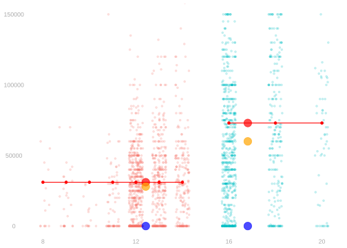
- We can think of both uncoarsened and coarsened subsample means as least squares estimators.
- Each is the best choice, within some set of functions, for predicting \(Y\) from \(X\).
- But the set of functions we’re choosing from is different in each case.
- In the uncoarsened case, we’re choosing from all functions of \(X\).
- In the coarsened case, we’re choosing from functions of the coarsened \(X\).
- We could consider other sets of functions as well.
\[ \hat\mu = \mathop{\mathrm{argmin}}_{m \in \mathcal{M}} \sum_{i=1}^n \{ Y_i - m(X_i) \}^2 \qquad \text{ where } \quad \mathcal{M} \ \ \text{ is our model.} \]
Least Squares Regression in Linear Models
Least Squares Regression
- Regression, generally, is choosing a function of covariates \(X_i\) to predict outcomes \(Y_i\).
- We choose from a set of functions \(\mathcal{M}\) that we call a regression model.
\[ Y_i \approx \hat\mu(X_i) \qfor \hat\mu \in \mathcal{M} \]
- In this class, we’ll choose by least squares. We can do this for any model we like.
\[ \begin{aligned} \hat\mu &= \mathop{\mathrm{argmin}}_{m \in \mathcal{M}} \sum_{i=1}^n \{ Y_i - m(X_i) \}^2 \qfor && \textcolor{red}{\mathcal{M}} = \qty{ \text{all functions} \ m(x) } \\ &&& \textcolor{blue}{\mathcal{M}} = \qty{ \text{all lines} \ m(x) = a + bx } \\ &&& \textcolor{magenta}{\mathcal{M}} = \qty{ \text{all increasing functions} \ m(x) } \\ &&& \textcolor{cyan}{\mathcal{M}} = \qty{ \text{all functions of an indicator} \ m(x)=f(1_{\ge 16}(x))} \\ \end{aligned} \]
Least Squares in Linear Models
- We’re going to focus on choosing from linear models.
- These are sets of functions that are ‘closed’ under addition, subtraction, and scaling by constants.
- This means when we add, subtract, and scale functions in the model, we get another function in the model. \[ a(x), b(x) \in \mathcal{M}\implies a(x) + b(x), a(x) - b(x), c a(x) \in \mathcal{M}\quad \text{ for any constant $c$ } \]
- Q. Which of these models are linear?
\[ \begin{aligned} \textcolor{red}{\mathcal{M}} &= \qty{ \text{all functions} \ m(x) } \\ \textcolor{blue}{\mathcal{M}} &= \qty{ \text{all lines} \ m(x)=a + bx } \\ \textcolor{magenta}{\mathcal{M}} &= \qty{ \text{all increasing functions} \ m(x) } \\ \textcolor{cyan}{\mathcal{M}} &= \qty{ \text{all functions of an indicator} \ m(x)=f(1_{\ge 16}(x))} \\ \end{aligned} \]
Multivariate Regression Models
A few examples.
Additive Models
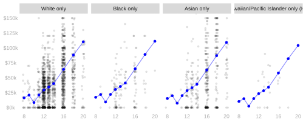
- Here we let our predictions be arbitrary functions of education (\(x\)) as before.
- But we’re requiring that race (\(w\)) only shift that function up and down—it can’t change the function’s shape.
- The result, in visual terms, are predictions for different values of \(w\) are ‘parallel curves’.
\[\small{ \begin{aligned} \textcolor{blue}{\mathcal{M}} &= \qty{ m(w,x) = m_0(w) + m_1(x) \ \ \text{for univariate functions} \ \ m_0, m_1 } &&\text{additive bivariate model} \\ \end{aligned} } \]
The Parallel Lines Model
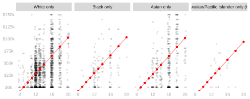
- Here we impose the additional restriction that the function of education (\(x\)) is a line.
- This means that the predictions for different values of \(w\) are parallel lines: same slope, different intercepts.
\[\small{ \begin{aligned} \textcolor{red}{\mathcal{M}} &= \qty{ m(w,x) = a(w) + b x } &&\text{parallel lines} \\ \end{aligned} } \]
The Not-Necessarily-Parallel Lines Model
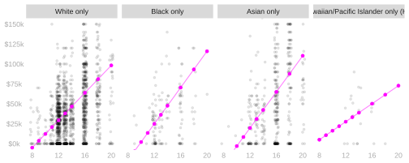
- Here we stick with the lines thing, but drop the additivity restriction.
- For each value of \(w\), we can get a totally different line—different intercept and slope.
\[\small{ \begin{aligned} \textcolor{magenta}{\mathcal{M}} &= \qty{ m(w,x) = a(w) + b(w) x } &&\text{lines} \\ \end{aligned} } \]
Where This Leaves Us

- Each of these approaches allows us to make predictions everywhere—even in columns we haven’t sampled.
- Fundamentally, it’s because they’re using information from one column to make predictions in another.
- Q. This solves the empty-groups problem, but it introduces a new one. What is it?
- A. We’re basing our predictions on assumptions about what \(\mu\) looks like.
- If we’re wrong, our predictions will be wrong. It’ll bias our estimates of \(\mu(x)\).
Where We’re Going
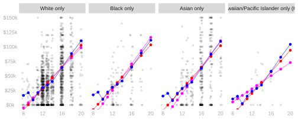
- There’s no right model to use. Each has its own strengths and weaknesses.
- In the next couple weeks, we’ll look into the issues surrounding model choice.
- Implications of bad model choice.
- A good model to use by default.
- How to choose a model automatically.
Practice
A Small Dataset

- Researchers hypothesize that higher calcium intake causes greater bone density (stronger bones).
- Bone density scores indicate how good someone’s bone density is.
- 3 is typical, larger numbers are better, smaller numbers are worse
- a score of 0.5 or lower is used to diagnose osteoporosis.
- Patients in our sample are classified as old (age 65+) or young (age 64-).
- We’ll call this \(X_i\): \(X_i=0\) if patient \(i\) is young, \(X_i=1\) if patient \(i\) is old.
- Each patient in our sample regularly takes a calcium supplement or not.
- We’ll call this \(W_i\): \(W_i=1\) if patient \(i\) takes calcium supplement, \(W_i=0\) if they do not.
The Horizontal Lines Model

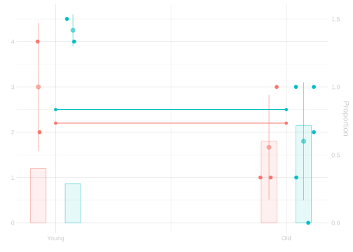
Sketch in the least squares predictor in the horizontal lines model.
\[ \mathcal{M} = \qty{ m(w,x) = a(w) \ \ \text{for univariate functions} \ \ a } \]
Flip a slide forward to check your answer.
The Not-Necessarily-Parallel Lines Model

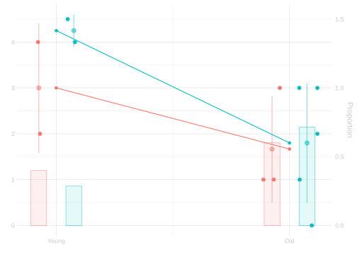
Sketch in the least squares predictor in the not-necessarily-parallel lines model.
\[ \mathcal{M} = \qty{ m(w,x) = a(w) + b(w) x \ \ \text{for univariate functions} \ \ a,b } \]
Flip a slide forward to check your answer.
The Parallel Lines Model


Sketch in the least squares predictor in the parallel lines model.
\[ \mathcal{M} = \qty{ m(w,x) = a(w) + b x \ \ \text{for univariate functions} \ \ a \ \ \text{and constants} \ \ b } \]
Flip a slide forward to check your answer.
The Additive Model
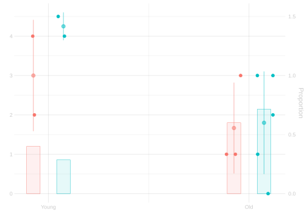
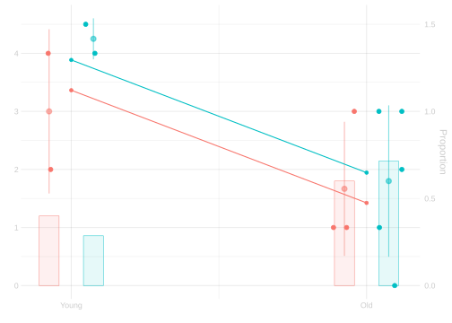
Sketch in the least squares predictor in the additive model. \[ \mathcal{M} = \qty{ m(w,x) = a(w) + b(x) \ \ \text{for univariate functions} \ \ a,b } \]
Flip a slide forward to check your answer. Is what you’ve drawn familiar? If so, why?
- It’s the same as the parallel lines model.
- When \(x\) takes on two values, all functions of \(x\) can be written as lines.
- Adding a function of \(w\) to it, we get different—but parallel—lines for different values of \(w\).